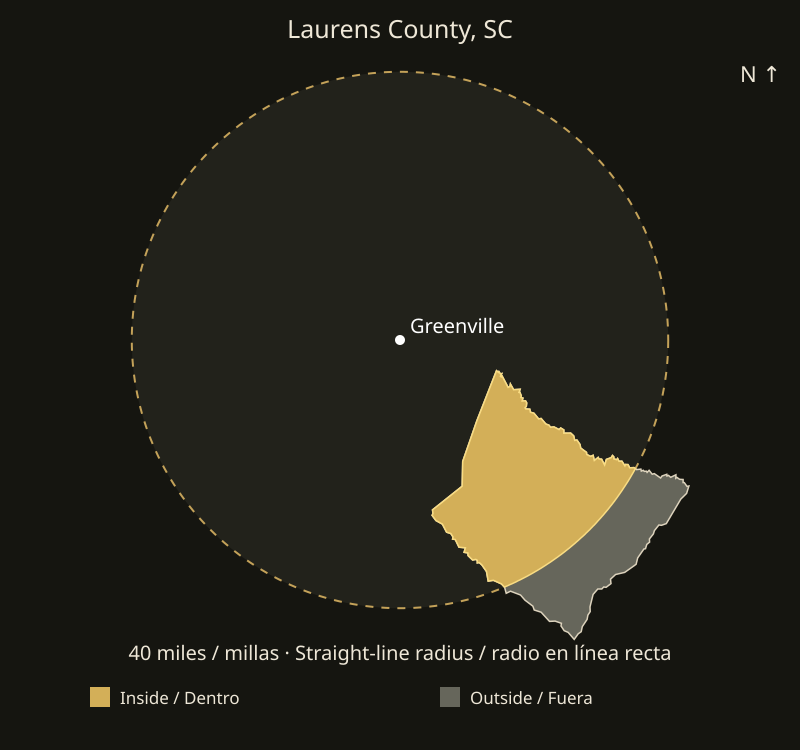
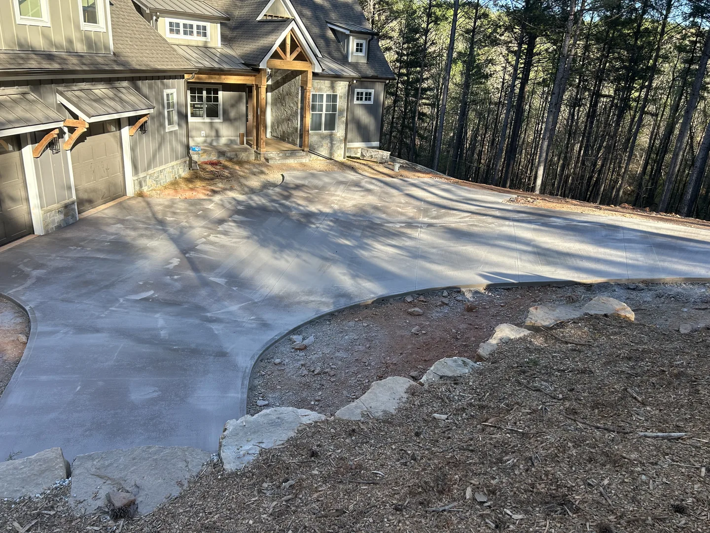

Concrete
Driveways, extensions, patios and walkways. Grading and excavation are included when needed for concrete preparation.
Explore this serviceConcrete • Pavers • Landscaping • Remodeling • Welding
For the portion of the county within 40 miles of downtown Greenville. Confirm your address with EBC before scheduling.
Check coverage & request an estimate
The nearest part of Laurens County is approximately 15.07 straight-line miles from downtown Greenville. About 67.2% of the county area falls inside the 40-mile circle.
Coverage is limited to addresses within 40 miles of downtown Greenville in a straight line. Driving distance may be longer. EBC reviews the address, access, scope and availability before confirming a project.
Send your locationFor a longer driveway or walkway, provide overall length, desired width and photos from both ends. Identify existing concrete to retain and areas requiring replacement.
Driveways, extensions, patios and walkways. Grading and excavation are included when needed for concrete preparation.
Explore this servicePaver patios and walkways, sod installation and preparation of the lawn area. Send separate photos of each surface.
Explore this serviceShow the complete piece and close-ups, dimensions and intended use. We review the material and condition before confirming the work.
Explore this serviceTell us which areas you want to improve, the existing conditions and your priorities. Scope and availability are confirmed after review.
Discuss your project
Browse real EBC projects, then share the finish and layout you have in mind. Photos illustrate our portfolio, not a claim of a local office or completed work in every county.
View real EBC projectsSend your address, photos, approximate measurements and preferred timing. Message EBC in English or Spanish to request an estimate.